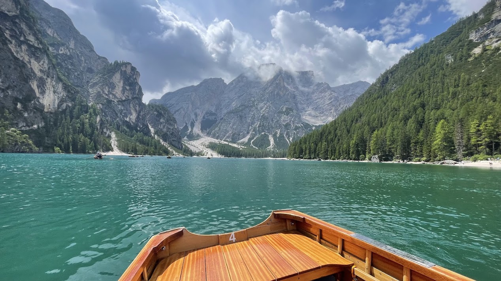

01 / EL DESTINO
Descubriendo Dolomitas
Dolomitas forman parte de los Alpes, en el noreste de Italia. Sus montañas de roca clara, sus valles verdes y sus lagos hacen que cada paisaje sea diferente.

¿Qué lo hace especial?
Lo que más me llamó la atención fue el contraste entre las paredes de roca, las praderas y los pequeños pueblos rodeados de naturaleza.
Es un destino donde puedes combinar rutas de senderismo con visitas más tranquilas a miradores. Por eso, no hace falta hacer excursiones exigentes todos los días para disfrutar del viaje.
Conoce los lugares que visité →